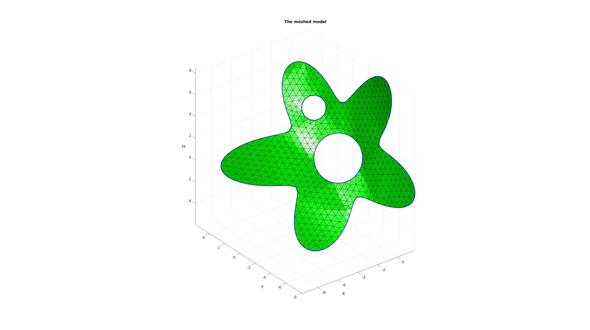

regionTriMesh3D
Below is a basic demonstration of the features of the regionTriMesh3D function.
Contents
Syntax
[F,V]=regionTriMesh3D(regionCell,pointSpacing,resampleCurveOpt,interpMethod);
Description
This function meshes a 3D region. It is conceptually similar to regionTriMesh2D. The 3D regions are rigidly transformed to a nearly 2D form and regionTriMesh2D is then used for 2D meshing. Then interpolation is to get the coordinates in the 3rd dimension.
See also: regionTriMesh2D
Examples
clear; close all; clc;
Plot settings
fontSize=15; markerSize1=45; lineWidth1=4; faceAlpha=0.5;
Example: Meshing a 3D region
Creating example boundary curves and input region specification
%Boundary 1 ns=150; t=linspace(0,2*pi,ns); t=t(1:end-1); r=6+2.*sin(5*t); [x,y] = pol2cart(t,r); z=1/10*x.^2; V1=[x(:) y(:) z(:)]; %Boundary 2 ns=100; t=linspace(0,2*pi,ns); t=t(1:end-1); [x,y] = pol2cart(t,ones(size(t))); z=zeros(size(x)); V2=[x(:) y(:)+4 z(:)]; %Boundary 3 ns=75; t=linspace(0,2*pi,ns); t=t(1:end-1); [x,y] = pol2cart(t,2*ones(size(t))); z=zeros(size(x)); V3=[x(:) y(:)-0.5 z(:)]; %Create Euler angles to set directions E=[0.25*pi -0.25*pi 0]; [R,~]=euler2DCM(E); %The true directions for X, Y and Z axis V1=(R*V1')'; %Rotate polygon V2=(R*V2')'; %Rotate polygon V3=(R*V3')'; %Rotate polygon regionCell={V1,V2,V3}; %A region between V1 and V2 (V2 forms a hole inside V1)
Meshing the region (See also regionTriMesh2D)
%Defining a region and control parameters (See also |regionTriMesh2D|) pointSpacing=0.5; %Desired point spacing resampleCurveOpt=1; interpMethod='linear'; %or 'natural' [F,V]=regionTriMesh3D(regionCell,pointSpacing,resampleCurveOpt,interpMethod);
Plotting meshed model
cFigure; hold on; title('The meshed model','FontSize',fontSize); gpatch(F,V,'g'); plotV(V1,'b-','LineWidth',2); plotV(V2,'b-','LineWidth',2); plotV(V3,'b-','LineWidth',2); axisGeom(gca,fontSize); camlight headlight; drawnow;

GIBBON www.gibboncode.org
Kevin Mattheus Moerman, gibbon.toolbox@gmail.com
GIBBON footer text
License: https://github.com/gibbonCode/GIBBON/blob/master/LICENSE
GIBBON: The Geometry and Image-based Bioengineering add-On. A toolbox for image segmentation, image-based modeling, meshing, and finite element analysis.
Copyright (C) 2006-2023 Kevin Mattheus Moerman and the GIBBON contributors
This program is free software: you can redistribute it and/or modify it under the terms of the GNU General Public License as published by the Free Software Foundation, either version 3 of the License, or (at your option) any later version.
This program is distributed in the hope that it will be useful, but WITHOUT ANY WARRANTY; without even the implied warranty of MERCHANTABILITY or FITNESS FOR A PARTICULAR PURPOSE. See the GNU General Public License for more details.
You should have received a copy of the GNU General Public License along with this program. If not, see http://www.gnu.org/licenses/.